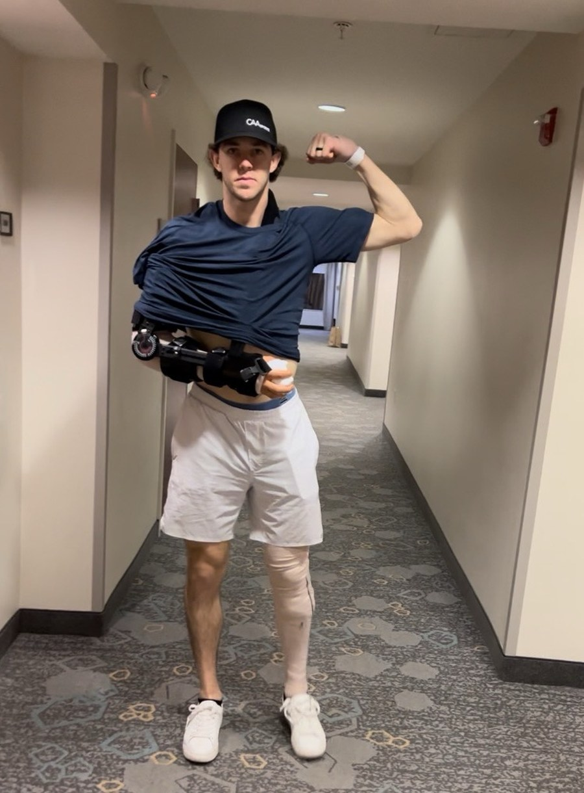

A plan every day
Your whole day is laid out in the PitchSafe app: throwing, arm care, mobility, lifting. We go over the coming week together, and every throw gets logged so we can see the whole road.
Tommy John and thoracic outlet surgery. Eight pro seasons, the 82nd pick in the 2017 draft, and two long roads back. Now I program pitchers through theirs, from wherever they are.
Text Matt
Your surgeon and PT do the part I can't. But once you're ramping up, you're on a mound with a repaired arm, a fastball you don't recognize, and a lot of questions nobody around you has lived.
I know that gap because I was in it. I was missing a mentor, someone experienced, when I hit the ramp-up phase from TJ. That's who I try to be for the guys I work with.
No two comebacks run the same, so there's no template. The plan is built around where you are this week, and it changes when you do.
Your whole day is laid out in the PitchSafe app: throwing, arm care, mobility, lifting. We go over the coming week together, and every throw gets logged so we can see the whole road.
We build on your return-to-throw progression: how far, how many, how hard. Some days that means 90 feet at 50% intent. As you climb, I watch the volume as closely as the intensity.
FaceTime me in for the pen or plyos, or send the video after. Either way you get eyes on it and a real answer the same way you'd get it in person.
A long layoff changes how you move. We use delivery drills and plyos to get your body to accept the movement again, without the arm forcing itself through.
Deload weeks are part of the plan, not a setback. Arm care keeps going, even if it's 15 minutes in a hotel gym. If you need to skip a lift to protect a throwing day, we skip it.
Should you pitch this summer or keep building? When does a live BP make sense? We make those decisions together, with the season you actually care about in mind.
Every single TJ guy goes through it. You feel like you're letting it go, and the gun disagrees. It's natural to feel uncertain. You just need somebody who can tell you it's normal, because they stood there too.
I was trying as hard as I possibly could for 84 for like three weeks. At 11.5 months I was 85-87 and felt like I was throwing 100. Me, on my own Tommy John comeback
I came back from that throwing 2 mph harder and signed with Seattle.
I'm a pitching coach, not a doctor or a physical therapist. I don't diagnose injuries, treat them, or clear anyone to throw. Your medical team makes those calls, and if they say slow down, we slow down. My job is everything on the pitching side of that line.
Nathan had already done the hard early months when we connected in March. This is what the ramp-up looked like from there.
One athlete's comeback, with his surgeon, PT, and years of his own work behind it. Every injury is different, and I can't promise a velocity or a timeline.
Opens a blank text to Matt at (978) 846-5937. He reads every one himself.
Prefer Instagram? @matttaborbaseball